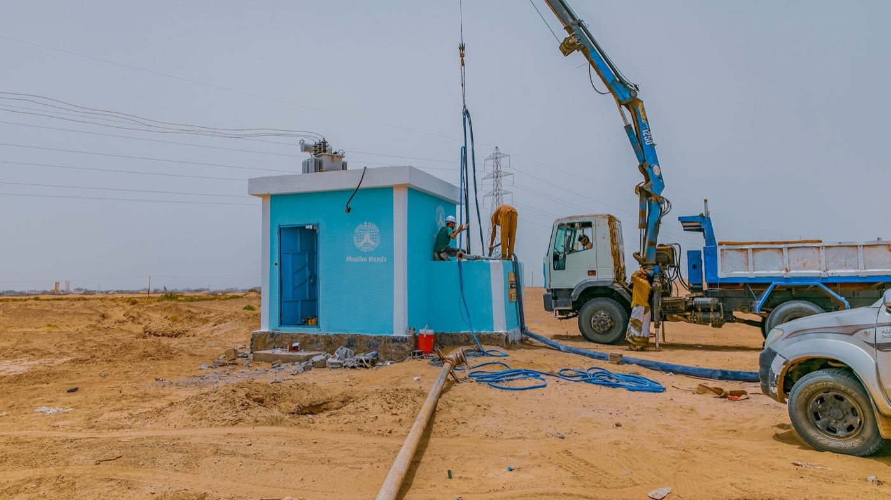

- 10 € : le pain d'une famille pendant un mois, cuit dans nos boulangeries d'Aden
- Équipe yéménite sur place, achats sur les marchés locaux
- Éligible à la zakat · reçu fiscal immédiat, 66 % déductible
La situation au Yémen aujourd'hui
Depuis 2015, la guerre entre le gouvernement reconnu et les forces houthistes a coupé le pays en deux et ruiné son économie. La monnaie a perdu l'essentiel de sa valeur, les fonctionnaires ne sont plus payés dans une partie du pays, et le Yémen importe 90 % de sa nourriture : chaque hausse des prix mondiaux se paie directement dans les assiettes. Les Nations unies estiment que 22 millions de personnes, plus de deux habitants sur trois, ont besoin d'une aide humanitaire en 2026.
L'année 2026 a aggravé la crise : le Programme alimentaire mondial a dû réduire ses équipes dans le nord en janvier, les combats ont repris sur plusieurs fronts à l'automne et les financements internationaux reculent. Le choléra et la malnutrition des enfants restent les deux premières causes de mortalité évitable. Nos équipes concentrent leurs moyens sur le pain quotidien, l'eau potable et les soins de base. Cette page est mise à jour chaque mois.

Urgence Yémen
50 € vous coûtent 17 € après réduction d'impôt de 66 %.
Je donne pour le YémenÉligible à la zakat · reçu fiscal immédiat · paiement sécurisé
Comment l'aide arrive-t-elle au Yémen ?
Muslim Hands travaille au Yémen avec une équipe yéménite basée à Aden et des partenaires locaux à Taëz, dans le Hadramaout et à Ma'rib. Le pays est divisé : nous intervenons dans les zones où nos équipes peuvent circuler, vérifier les listes et rendre compte. La farine, l'huile et le riz sont achetés sur les marchés yéménites quand les prix le permettent, importés par le port d'Aden sinon. Les boulangeries cuisent chaque matin ; le pain est remis aux familles inscrites, déplacées pour la plupart.
Collecte en France
Votre don rejoint le fonds Urgence Yémen, tracé séparément. Les dons zakat sont fléchés vers les bénéficiaires éligibles.
Achat
Farine et combustible pour les boulangeries, denrées des colis, médicaments des cliniques mobiles, achetés à Aden ou importés.
Distribution
Pain quotidien, colis mensuels, eau par camion et consultations mobiles, par notre équipe yéménite et ses partenaires.
Compte rendu
Listes, photos et factures remontent à Paris ; le bilan est publié dans les actualités et le rapport annuel.

Ce que fait Muslim Hands sur place
Boulangeries solidaires
Cinq boulangeries à Aden, Ma'rib et Seiyun cuisent chaque jour le pain de familles déplacées. 10 € couvrent le pain d'une famille pendant un mois.
Eau potable
Réhabilitation de points d'eau, forages à énergie solaire, réservoirs et latrines pour couper la route au choléra.
Cliniques mobiles
Consultations, médicaments essentiels et dépistage de la malnutrition dans les quartiers et les camps sans centre de santé.
Repas scolaires
Un repas par jour à l'école pour que les enfants reviennent en classe et que les familles économisent un repas.
Orphelins de guerre
Parrainage d'enfants de Taëz et d'Aden logés dans leur famille élargie : nourriture, école, santé.
Moyens de subsistance
Bateaux de pêche, outils et semences, petit bétail pour que les familles retrouvent un revenu.
Que finance mon don pour le Yémen ?
Les montants ci-dessous sont nos coûts réels d'achat et de distribution à Aden, revus chaque trimestre.
| Don | Ce qu'il permet | Fiche |
|---|---|---|
| 10 € | Le pain d'une famille pendant un mois, cuit dans nos boulangeries d'Aden | Donner |
| 50 € | Un colis alimentaire pour une famille pendant un mois : farine, riz, huile, sucre, légumineuses | Donner |
| 100 € | De l'eau potable pour dix familles pendant un mois, par camion-citerne | Donner |
| 150 € | Une journée de clinique mobile : consultations et médicaments pour une trentaine de patients | Donner |
| 39 € / mois | Le parrainage d'un orphelin de Taëz, logé dans sa famille élargie | Parrainer |
Pour un geste qui dure, un forage solaire dans un village du Hadramaout donne de l'eau pendant vingt ans, sans carburant.
Bilan de l'action au Yémen
Depuis le début de la guerre, le fonds Urgence Yémen a financé l'ouverture et le fonctionnement de cinq boulangeries solidaires, la réhabilitation de points d'eau et de réseaux dans quatre gouvernorats, des cliniques mobiles et des repas scolaires. Le bilan chiffré de l'année est publié dans le rapport annuel et dans les actualités, avec les photos de nos équipes.

« Avant la boulangerie, je choisissais entre le pain et le médicament de ma fille. Maintenant, le pain arrive chaque matin et je ne choisis plus. »Oum Ahmed, mère de quatre enfants, déplacée à Aden, septembre 2026
Votre don pour le Yémen et vos impôts
Muslim Hands France est une association d'intérêt général : votre don pour le Yémen ouvre droit à une réduction d'impôt sur le revenu de 66 %, dans la limite de 20 % du revenu imposable. 50 € vous coûtent 17 €, 150 € vous coûtent 51 €. Le reçu fiscal est envoyé par e-mail immédiatement après le paiement. Votre don peut aussi être votre zakat al maal. Tout savoir sur la déduction fiscale.

Questions fréquentes sur le don pour le Yémen
Où intervenez-vous au Yémen ?
À Aden, à Taëz, dans le Hadramaout (Seiyun) et le gouvernorat de Ma'rib, avec une équipe yéménite et des partenaires locaux. Nos boulangeries solidaires d'Aden et de Ma'rib fournissent du pain chaque jour aux familles déplacées.
Que finance mon don pour le Yémen ?
10 € le pain d'une famille pendant un mois dans nos boulangeries, 50 € un colis alimentaire pour un mois, 100 € de l'eau potable pour dix familles pendant un mois, 150 € une journée de clinique mobile, 39 € par mois le parrainage d'un orphelin de Taëz.
Comment l'aide arrive-t-elle au Yémen ?
Par le port d'Aden, puis par la route vers Taëz, Ma'rib et le Hadramaout. La farine est achetée sur les marchés yéménites quand les prix le permettent, importée sinon. Les distributions se font sur listes établies avec les comités de quartier et de camp.
Pourquoi le Yémen a-t-il encore besoin d'aide en 2026 ?
Plus de dix ans de guerre ont ruiné l'économie : la monnaie s'est effondrée, les salaires ne sont plus versés dans une partie du pays et les prix des denrées importées ont explosé. Selon les Nations unies, 22 millions de Yéménites ont besoin d'une aide humanitaire en 2026, alors que les financements internationaux reculent.
Mon don pour le Yémen est-il déductible des impôts ?
Oui, à 66 % de son montant, dans la limite de 20 % du revenu imposable : 50 € vous coûtent 17 €. Le reçu fiscal est envoyé immédiatement par e-mail.
Puis-je donner ma zakat pour le Yémen ?
Oui. Les familles déplacées, les veuves et les orphelins du Yémen font partie des ayants droit de la zakat. Cochez la case « Zakat » lors du don : il rejoint le fonds zakat, tracé séparément.

De l'eau propre, contre le choléra.
100 € donnent de l'eau potable à dix familles pendant un mois dans les quartiers déplacés d'Aden.
Offrir de l'eau potable